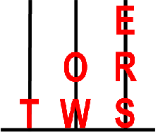

<table align="center" cellpadding="3px" cellspacing="10px">
<tbody><tr>
<td valign="top">
A bad joke teller might receive this<br />
Move the tiniest iota<br />
Like mosh pit dancers<br />
Kwame&rsquo;s superpower<br />
Travels from World 1 to World 4<br />
A Boolean value<br />
Without potty language or innuendo<br />
Gives two thumbs up, perhaps<br />
Time-bending video game from 2008<br />
Get up<br />
Don&rsquo;t agree to disagree<br />
Makes a sweater<br />
You might smear a shmear on one<br />
Deserve (as a reward)<br />
Turning point?<br />
</td>
<td valign="top">
Actor who once played a Butler<br />
A dog&rsquo;s worst enemies<br />
A donation that can&rsquo;t be returned<br />
Disguises a box&rsquo;s contents<br />
Don&rsquo;t punish<br />
Evidence of needing a diaper change<br />
Fanatic<br />
Get the code running<br />
Give the evil eye<br />
In need of an editor<br />
It&rsquo;s straight from the horse&rsquo;s mouth?<br />
Negotiation bargaining chip<br />
Renaissance fair weapon<br />
Word with &ldquo;break&rdquo; or &ldquo;attack&rdquo;<br />
You might need it if you&rsquo;re boring<br />
</td>
</tr>
</tbody></table>
